このチュートリアルでは、アポロ11号ミッションを打ち上げから着水まで通してプレイする手順について説明します。
あらかじめ、以下のMODをすべてインストールしておいてください。
以下のショートカットキーを押してしまうと、その時点でミッション失敗になる可能性があります。
| テンキーEnter | メインエンジンを全開にする。 テンキー以外のEnterなら問題ない。 |
| J | ステージを分離する。 打ち上げを強制的に中止する。 |
音声パックを導入している場合、特定の時間になるとタイムワープが自動で解除されます。
Ctrl + Kでこの機能を停止できます（音声が再生されなくなります）。
使用するシナリオは、AS-506フォルダのApollo 11 step 01です。
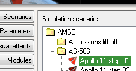
ゲーム開始から30秒後にJキーを押す。（ゲーム内右上の時計で13:27:00）
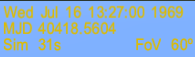
5分後に自動打ち上げ＆軌道投入が実行されるので、何もせず待つ。※
※音声パックを導入している場合、実際のカウントダウンの録音が再生されます。
ロケットが軌道に乗ったら、LunarTransferMFDを起動する。
PRGをクリックしてProgram menuを開く。
NXTを何度かクリックしてProgram TLIを選択。
SETをクリック。
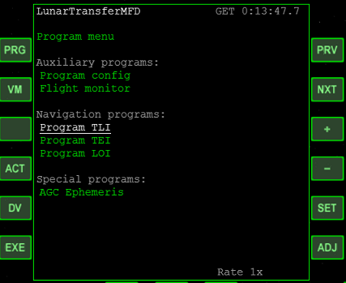
+をクリックしてModをSurfaceにする。
TIgでも同様に+をクリックしてManualにする。
Tgtでは何度か+をクリックして、Tranquillity（静かの海）にする。
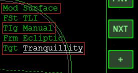
※ModはMode（モード）、TIgはTime to Ignition（点火までの時間）、TgtはTargetの略
出発(TLI※)・到着(LOI)・着陸の予定時刻と、月周回軌道の高度を設定する。
※TLI(Trans Lunar Injection)＝エンジンを噴射して地球から月に向かうこと
| PeT | 75:49:50 |
| PeA | 111k |
| TOA | 106:30:00 |
| TIg | 2:44:16 |
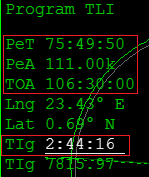
PeTは近月点に到着する（＝月に最接近する）時刻。
PeTはLOI（Lunar orbit insertion＝月軌道投入噴射）の開始時刻でもある。
PeAは近月点高度。これが月周回軌道の高度になる。
60海里≒111km。
TOA(Time of alignment)は、宇宙船が目標地点の上空を通る時刻。
月に到着してから着陸まで間があるので、PeTとは別に設定しておく。
TIg(Time to ignition)はTLI(Trans lunar injection)のエンジン噴射の時刻。
各項目を設定したら、左下のEXEボタンをクリック。
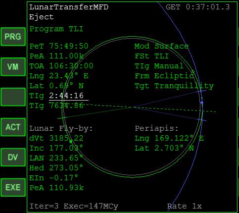
DVボタンをクリックして、もう一度EXEボタンをクリックすると、自動噴射のカウントダウンが開始する。
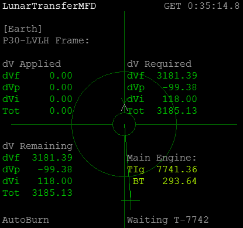
タイムワープで早送りして、何もせず待つ。
全自動で噴射が実行される。
噴射が終わったら、DVボタンをクリックして元の画面に戻る。
LunarTransferMFDの計算がうまくいかず、TLIに失敗することがあるようです。
MFD上の軌道表示が正しくない（軌道が大気圏に入っている）場合は、いったんゲームを終了してください。
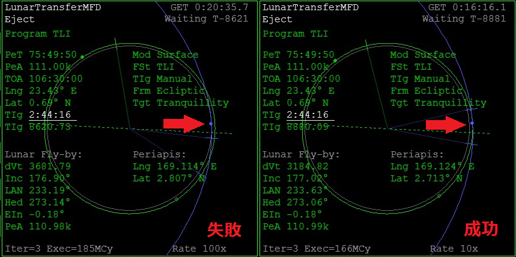
LaunchpadのCurrent stateからやり直して、もう一度LunarTransferMFDにデータを入力すると正しく計算されます。
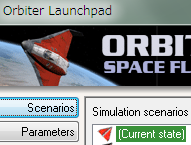
TOAは「宇宙船の軌道が、目的地上空を通る時刻」を決定します。
通常は着陸予定時刻(11号ならGET 102:45:39.9)に設定します。
ただしアポロ11号のミッションでは、着陸船を月から打ち上げて、司令船とランデブーさせる必要があります。
着陸した時点では、司令船の軌道は着陸地点のほぼ真上を通っています。
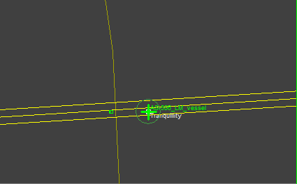
けれども、月が自転しているため、出発予定時刻が近づく頃には遠ざかってしまいます。
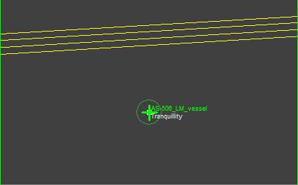
TOAと着陸予定時刻をずらしておくことによって、出発予定時刻において着陸船と司令船の軌道を近づけることができます。
不要な軌道修正を減らして、帰還のための燃料を節約するのに役立ちます。
以下のウェブサイトにて、アポロ11号ミッションの実際のタイムラインを確認できます。